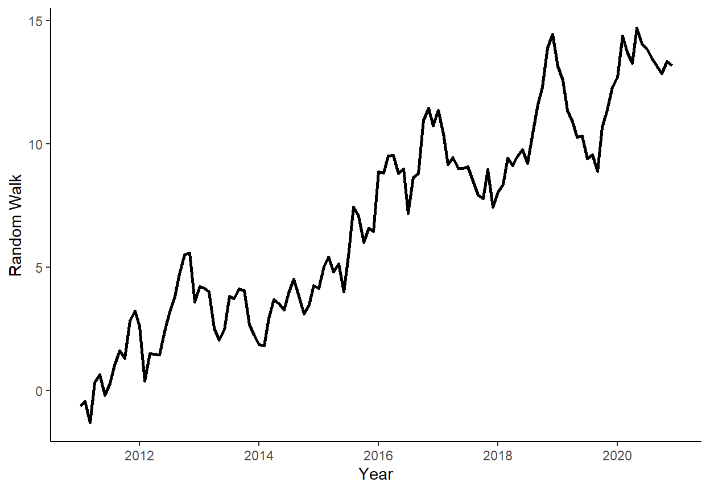

Chapter 10 plot the realized time series using ggplot function.
ggplot(dt,aes(x=date,y=y))+
geom_line(size=1)+
labs(x="Year",y="Random Walk")+
theme_classic()
Generate a sequence of one-step-ahead forecasts from naive and average methods, using the rolling window scheme, where the first rolling window ranges from period 1 to period 80.
dt$average <- NA
dt$naive <- NA
R <- 80
P <- n-R
for(i in 1:P){
w <- y[i:(R-1+i)]
dt$average[R+i] <- mean(w)
dt$naive[R+i] <- w[length(w)]
}Calculate the RMSFE measures for each of the two forecasting methods
dt[,`:=`(e_average=y-average,e_naive=y-naive)]
rmsfe_average <- sqrt(mean(dt$e_average^2,na.rm=T))
rmsfe_naive <- sqrt(mean(dt$e_naive^2,na.rm=T))
rmsfe_average## [1] 4.672947rmsfe_naive## [1] 0.850081Perform the forecast error diagnostics for the two considered methods.
\(H_0:E(e_{t+1|t})=0\)
summary(lm(e_average~1,data=dt))$coefficients## Estimate Std. Error t value Pr(>|t|)
## (Intercept) 4.434858 0.2358002 18.80769 3.682273e-21summary(lm(e_naive~1,data=dt))$coefficients## Estimate Std. Error t value Pr(>|t|)
## (Intercept) 0.1168396 0.13483 0.86657 0.391478\(H_0:Cov(e_{t+1|t},y_{t+1|t})=0\)
summary(lm(e_average~average,data=dt))$coefficients## Estimate Std. Error t value Pr(>|t|)
## (Intercept) 2.4180785 1.2929708 1.870172 0.06917788
## average 0.2942557 0.1856048 1.585389 0.12116580summary(lm(e_naive~naive,data=dt))$coefficients## Estimate Std. Error t value Pr(>|t|)
## (Intercept) 1.06489905 0.69740557 1.526944 0.1350565
## naive -0.08486143 0.06127484 -1.384931 0.1741512\(H_0:Cov(e_{t+1|t},y_{t|t-1})=0\)
dt[,`:=`(e_average.l1=shift(e_average),e_naive.l1=shift(e_naive))]
summary(lm(e_average~e_average.l1,data=dt))$coefficients## Estimate Std. Error t value Pr(>|t|)
## (Intercept) 0.7898068 0.42027705 1.879253 6.810403e-02
## e_average.l1 0.8275396 0.08966026 9.229726 3.892504e-11summary(lm(e_naive~e_naive.l1,data=dt))$coefficients## Estimate Std. Error t value Pr(>|t|)
## (Intercept) 0.12971406 0.1403668 0.9241081 0.3614178
## e_naive.l1 0.03780853 0.1631333 0.2317647 0.8179979